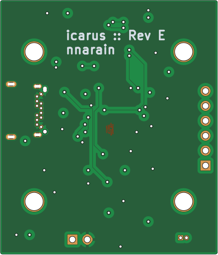

Icarus is a flight controller for micro-quads.
Features:
- Controls 4 brushed DC motors
- IMU (gyro/accelerometer/temperature)
- Barometer
- Battery sense
- USB Serial
- 30.5 x 30.5 millimeter mounting holes (for drones)
Design
Below is the design documentation for the Icarus Flight Controller.
Full schematics can be viewed here: schematic
Scope
The scope of this project is to design and build an embedded system that can be used as a microquad flight controller.
| Priority | Item |
|---|---|
| Must | Support at least 4 motors |
| Must | have motion sensor |
| Must | Interface for remote control |
| Should | Have USB 2.0 support |
Architecture
- PWM output to drive motors. There is also PWM input for encoder feedback
- An IMU can be used for motion sensing. At minimum a gyro and accelerometer would be required
- RC input would be require as input to the controller
Power Supply
Requirements
Motorized applications typically require two types of power: Logic power for digital components and analog power for the motors.
Power Supply Inputs
The board will have two inputs for power:
- Two pin input for single cell LiPo battery
- 5V input from a USB connector
Sensor
Requirements
As one of the purposes of this controller is for drones, understanding orientation in the air will be critical.
Sensor Selection
- MPU6050 for attitude estimation
- Barometer for altitude
MCU
The MCU requirements for this project are pretty basic:
- 4 PWM outputs
- 1x I2C
- USB Serial support
And ESP32-C3-MINI-1 module was selected for the following reasons:
- Enough IO to control 4 motors
- I2C for sensors
- Built-in 2.4GHz radio support + antenna
Board




Appendix
| Document | Item |
|---|---|
| Schematic | schematic |
| BOM | ibom |
| Fab Files | jlcpcb-files |